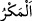

“”, birini helâk etmek ve işini bozmak için gizlice plan hazırlamak demektir.
Öyle ki kişi bu tuzağı ancak meydana çıktığı zaman bilebilir.
“Onlar” sana “tuzak kurarlarken Allah da” onlara “tuzak kuruyordu.” Yani onların
tuzaklarını kendi aleyhlerine çeviriyordu.
Tuzak kurmak, hile yapmak ve benzeri şeyler, Allah Teâlâ’ya ancak yapılana karşılık
ve misilleme yoluyla isnad edilebilir. (Yani “Allah onların tuzaklarını boşa çıkarır,
hilelerini aleyhlerine döndürür.” anlamındadır.) Bu gibi şeyleri ilk olarak Allah’ın
yaptığını söylemek, güzel düşmez. Çünkü hile ve tuzak kurmak, Allah Teâlâ’nın
azametine yakışmaz.
“Çünkü Allah tuzak kuranların en iyisidir.” Onun tuzağı yanında onların tuzaklarının
hiçbir kıymeti yoktur. Haddâdî der ki: Çünkü Allah, ancak haklı olarak ve doğruca
tuzak kurar. Kâfirlerin tuzakları ise bâtıldır ve zulümdür.
Bilesin ki halkın kendine göre bir tuzağı, Hakk’ın da kendine göre bir tuzağı vardır.
Halkın tuzağı onların hilekârlık ve acziyetlerinden kaynaklanır. Yaradan’ın tuzağı ise
hikmet ve kudretten ileri gelir. Hakk’ın tuzağı yanında halkın tuzağı bâtıldır, yok olup
gider. Hakk’ın tuzağı ise doğru ve kalıcıdır.
Hâfız der ki:
Sihir mucizeyle boy ölçüşemez, emin ol
Sâmirî kim oluyor ki, yed-i beyzâıya galip gelsin
Başkası da şöyle demiştir:
Kartalla kavgaya tutuşan, kanıyla kanadını boyar
Ebü’l-Aynâ şöyle anlatır: Benim, zâlim hasımlarım vardı. Onları Ahmed b. Dâvud’a
şikâyet edip: “Onlar birleşerek tek bir el gibi oldular.” dedim. “Allah’ın eli onların
ellerinin üzerindedir.” (el-Feth, 48/10) diye cevap verdi. “Onlar tuzak kuruyorlar.”
dedim. “Kötü tuzak, ancak sâhibine dolanır.” (Fâtır, 35/43) dedi. “Onlar sayıca da
çok.” dedim. Buna ise: “Nice az topluluk, Allah’ın izniyle çok topluluğa gâlib
gelmiştir.” (el-Bakara, 2/249) âyetiyle karşılık verdi.
İkbal kime yol gösterirse,
Düşmanı hemen tepetaklak olur
İskender’in tutanakları arasında altınla yazılmış bir mektup bulundu. Onda şöyle
yazıyordu:
“Allah Teâlâ gayelerin gayesi olduğuna göre O’nu tanımak ibadetlerin en büyüğüdür.
Ölüm hak olduğuna göre dünyaya meyletmek aldanmadır. Kader hak olduğuna göre